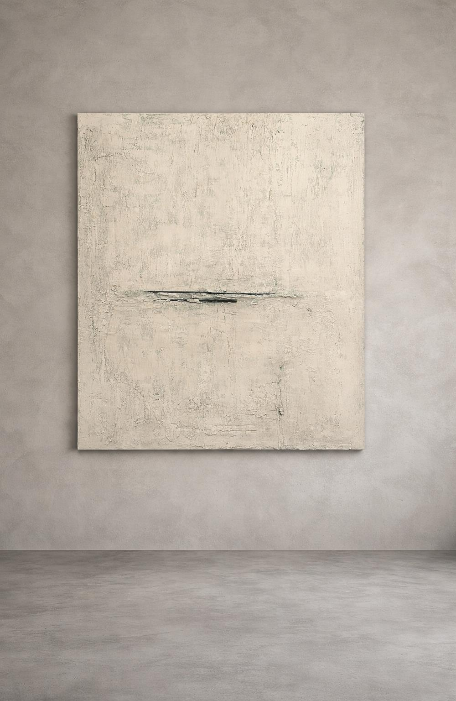
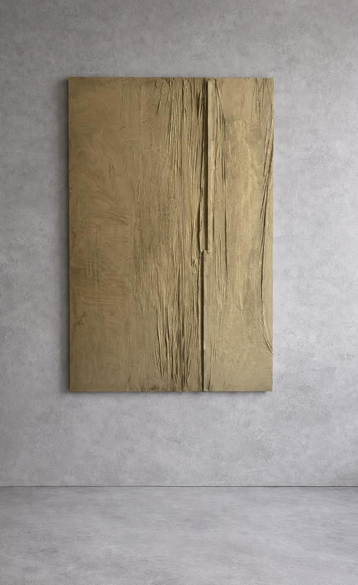
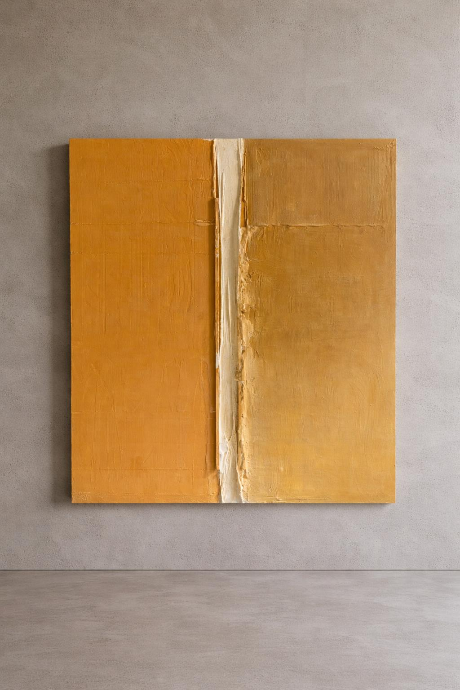
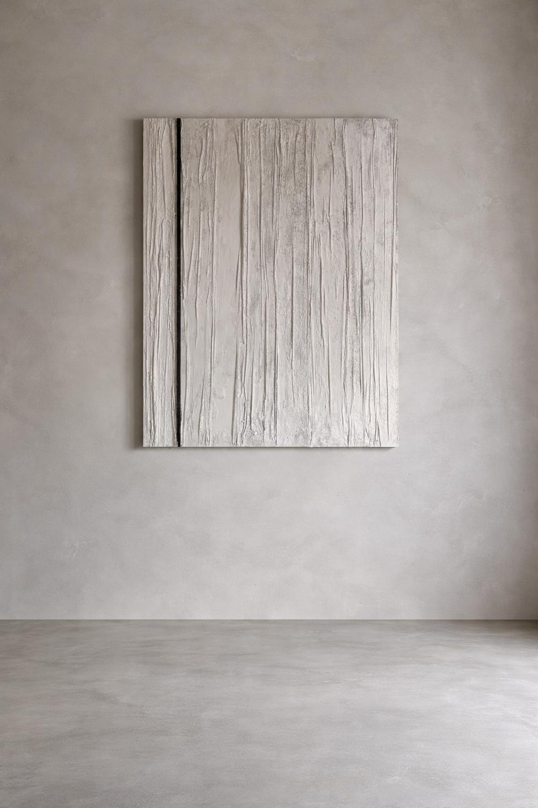
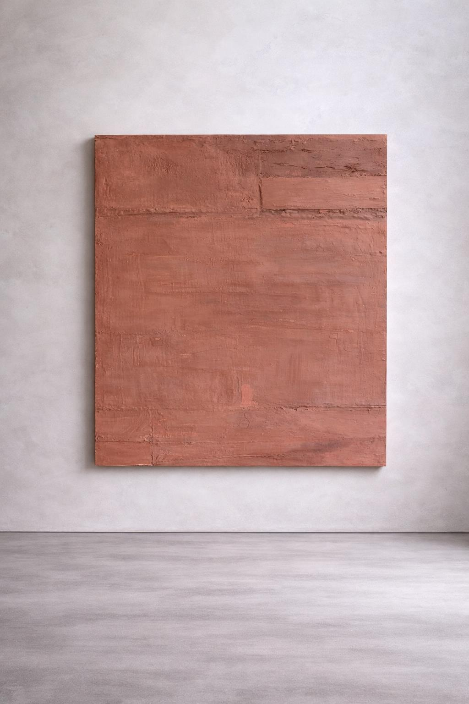
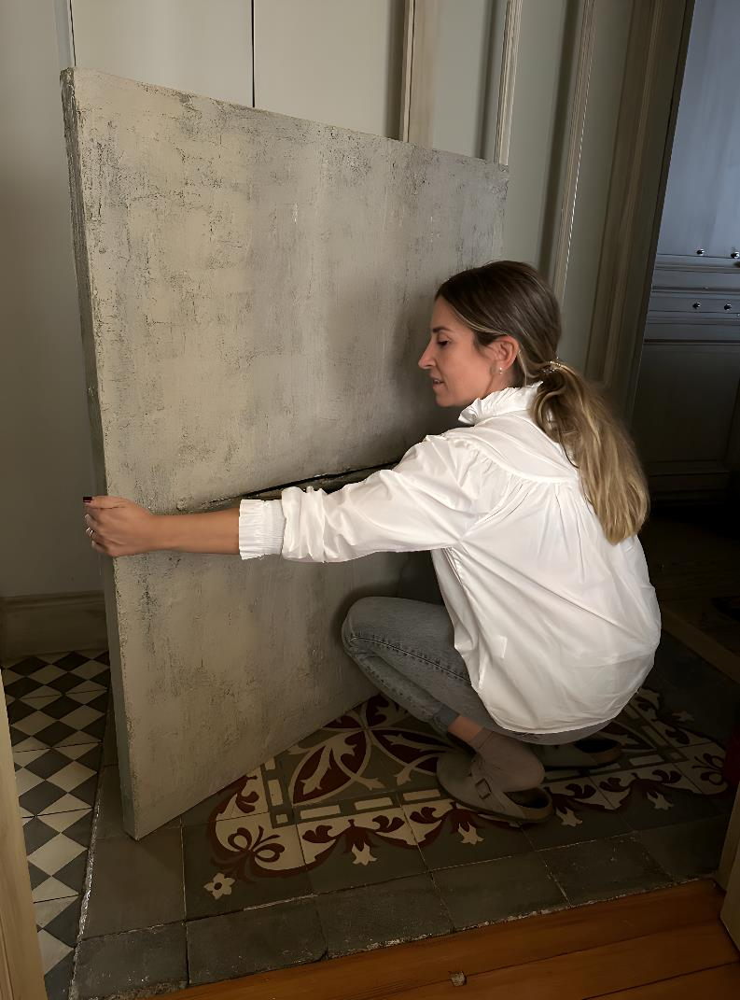
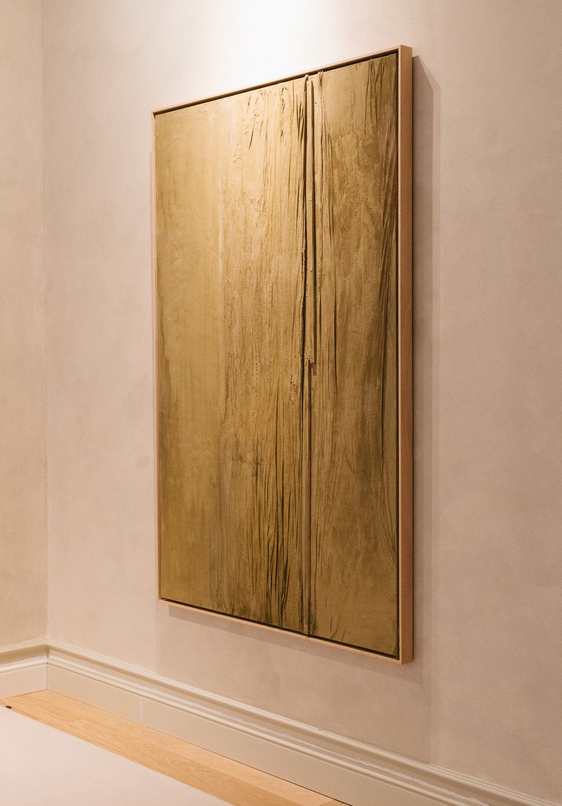
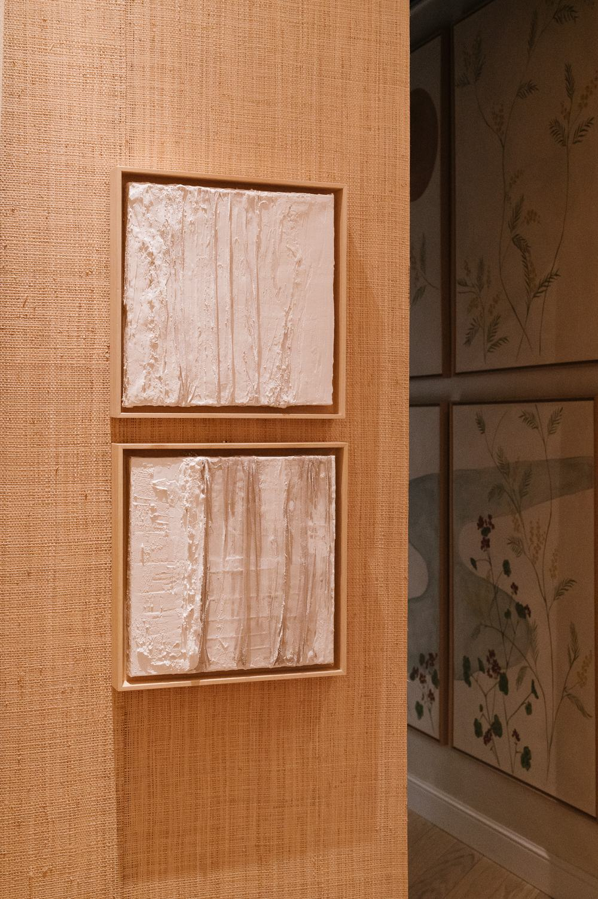
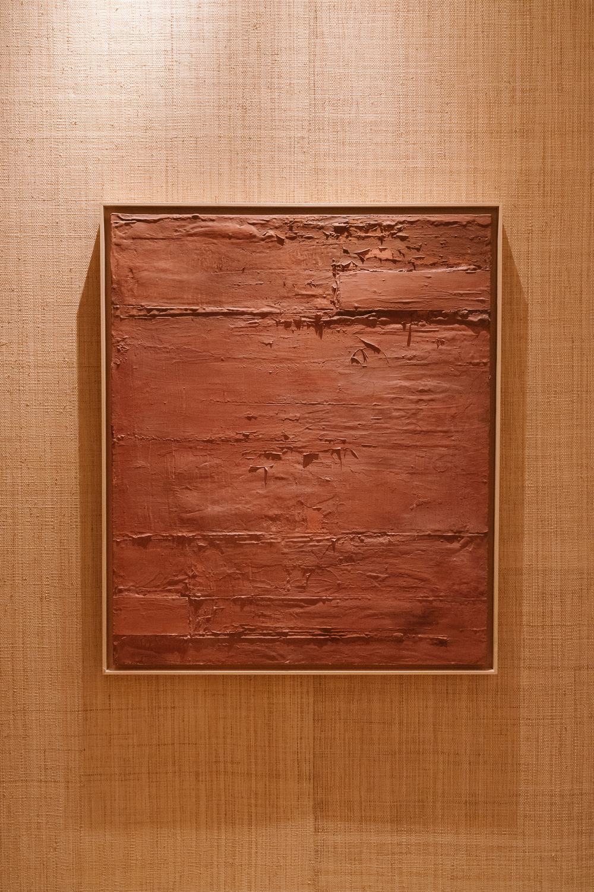
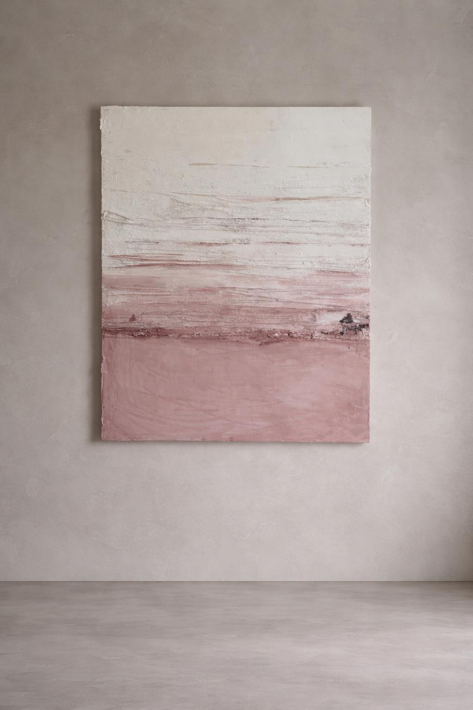

Sobre la obra
Lo imperfecto también guarda luz.
Paisajes matéricos que evocan fachadas desgastadas, restos de estructuras o huellas de lo que fue. Un punto de equilibrio entre la paz y la fuerza, lo estructural y lo orgánico.
BiografíaColección Silencio
Obra disponible

Para tu espacio
Un fragmento de fachada convertido en pintura
Escríbeme para recibir el catálogo actualizado o preguntar por una pieza.
Solicitar catálogoColección Ruido
En Ruido no pienso: dejo salir.
Figuras simples, casi esenciales, sostenidas por una lógica interna: recta, clara, honesta.

La artista
Leticia de Amescua
Tras terminar los estudios de arquitectura en Madrid, compagina su labor en su estudio de arquitectura con una investigación plástica centrada en la materia, el tiempo y la memoria de los espacios.
La obra en el espacio
Entre la arquitectura y el arte



Press
En prensa

En persona
La textura cambia con la luz y el lugar
Para ver una obra de cerca, pide cita.
Pedir cita